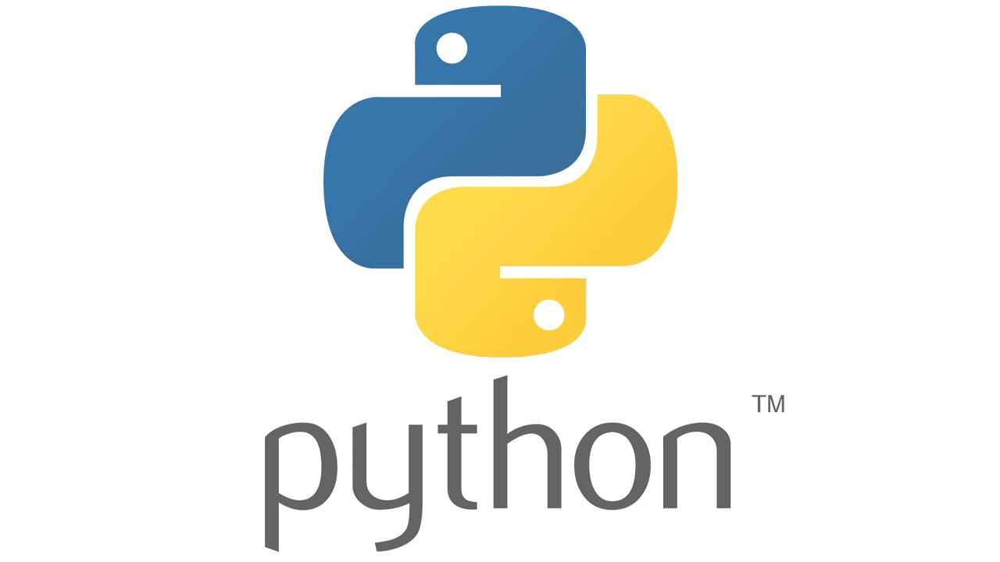
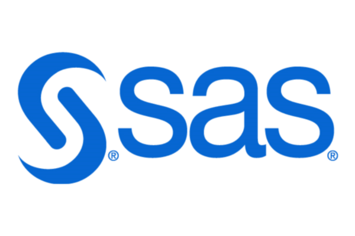

Langages & Logiciels






Je suis Erin CARADO, étudiante en troisième année de BUT Science des données (Ex-STID) et alternante en tant que statisticienne à l'hôpital de Saint-Brieuc. Passionnée par l'analyse de données et leur impact dans le domaine de la santé, je mets mes compétences en statistiques, datavisualisation et gestion de bases de données au service de projets visant à optimiser le traitement et l'interprétation des données hospitalières.
Power BI • R • SQL • Business Objects • SAS
Python • Streamlit
Excel VBA • RStudio • Shiny

